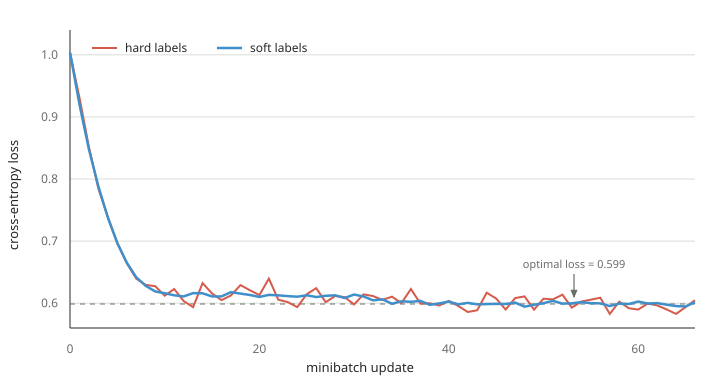

Distilling a Bigram
In an attempt to understand how distillation works, I wanted to see if we could distill a very simple model: the simplest language model I could think of, a bigram model.
To be honest, the experiment was not as satisfying as I wanted it to be. The distilled model does not learn a better bigram distribution, and with enough data the ordinary model reaches the same answer. But this result is still useful. It shows exactly what the soft targets change, and what they do not change.
Let us start with the cross-entropy loss. Suppose we have a dataset of size \(|D|\), where the total cross-entropy loss is given by
\begin{equation} \mathcal{L}_{\textsf{CE}} = -\frac{1}{|D|}\sum_t\sum_{i=1}^{d_{\text{vocab}}} p_t(i)\ln\hat{p}_t(i). \label{eq:cross-entropy} \end{equation}Here \(p_t(i)\) is the target probability of token \(i\) for training example \(t\), while \(\hat{p}_t(i)\) is the probability predicted by the model. In conventional classification, we observe one correct label \(y_t\). The target distribution is therefore
\[ p_t(i)= \begin{cases} 1, & i=y_t,\\ 0, & i\neq y_t. \end{cases} \]Only the term corresponding to \(y_t\) remains in Equation \(\eqref{eq:cross-entropy}\). The hard-label loss is therefore
\begin{equation} \mathcal{L}_{\textsf{hard}} = -\frac{1}{|D|}\sum_t \ln\hat{p}_t(y_t). \label{eq:hard-label} \end{equation}Start With a Sequence
Let us start with a simple case where there are two possible classes,
a and b. In other words, the vocabulary consists
of only two possible tokens. Suppose we observe the following sequence:
a b b a b a b a b a b a b b a b b
a b b a b b b a a b b a a a b a
There are 33 tokens and therefore 32 next-token examples. An uninformed
model predicts uniformly at random. For every token, it assigns a
\(50\%\) chance to a and a \(50\%\) chance to
b. The cross-entropy loss is
Since \(n_a+n_b=|D|\), the loss simplifies to
\[ \mathcal{L}_{\textsf{random}} = -\ln\left(\frac{1}{2}\right) = \ln(2) \approx 0.693 \text{ nats}. \]The Optimal Bigram
Next, you think you can do better. Perhaps knowing the preceding token gives some information about the next token. So you build a bigram model. To build it, we count the occurrences of each transition \(x_t\rightarrow x_{t+1}\):
For a bigram training example, the observed label is \(y_t=x_{t+1}\). The model sees \(x_t\), so the probability it assigns to that label is
\[ \hat{p}_t(y_t)=\hat{P}(x_{t+1}\mid x_t). \]Equation \(\eqref{eq:hard-label}\) therefore becomes
\begin{equation} \mathcal{L}_{\textsf{bigram,hard}} =-\frac{1}{|D|}\sum_t \ln\hat{P}(x_{t+1}\mid x_t). \label{eq:hard-bigram} \end{equation}| Preceding Token, \(x_t\) | Next Token, \(x_{t+1}\) | Total | |
|---|---|---|---|
a |
b |
||
a |
3 | 11 | 14 |
b |
11 | 7 | 18 |
Suppose we try to find the optimal bigram model using only this
dataset. After seeing a, the model assigns probability
After seeing b, it assigns probability
We can collect these four probabilities in a matrix:
\[ \hat{\PB} = \begin{bmatrix} 3/14 & 11/14 \\ 11/18 & 7/18 \end{bmatrix} \approx \begin{bmatrix} 0.214 & 0.786 \\ 0.611 & 0.389 \end{bmatrix}. \]More generally, let \(n_{ij}\) be the number of transitions from token \(i\) to token \(j\). Grouping the terms in Equation \(\eqref{eq:hard-bigram}\) by transition type gives
\begin{equation} \mathcal{L}_{\textsf{bigram,hard}} =-\frac{1}{|D|}\sum_i\sum_j n_{ij}\ln\hat{P}(j\mid i). \label{eq:hard-counts} \end{equation}
We can now substitute these probabilities into Equation
\(\eqref{eq:hard-counts}\). There are three examples where the model
sees a and the true next token is a. In each of
these examples, it assigns the true next token probability \(3/14\).
Their total contribution to the sum is therefore
\(-3\ln(3/14)\).
In the same way, the eleven a → b examples contribute
\(-11\ln(11/14)\), the eleven b → a examples contribute
\(-11\ln(11/18)\), and the seven b → b examples contribute
\(-7\ln(7/18)\). Since \(|D|=32\), the minimum training loss that a
bigram model can achieve on this dataset is
So even this tiny bigram model improves on the random baseline:
\[ \mathcal{L}^{*}_{D}\approx0.603 < \mathcal{L}_{\textsf{random}}\approx0.693. \]Now suppose I told you that the sequence above was sampled from the true transition probabilities
\[ \PB_{\text{true}} = \begin{bmatrix} 0.20 & 0.80 \\ 0.60 & 0.40 \end{bmatrix}. \]Suppose we actually knew \(\PB_{\text{true}}\), and an oracle model predicted these probabilities exactly. On the same 32 examples, its loss would be
\begin{align*} \mathcal{L}_{\textsf{oracle},D} = -\frac{1}{32}\big[& 3\ln(0.20)+11\ln(0.80) \\ &+11\ln(0.60)+7\ln(0.40)\big] \approx 0.604 \text{ nats}. \end{align*}This is slightly larger than the empirical optimum, \(0.603\). The empirical model was fitted to these exact 32 examples, whereas the oracle describes the process that generated them. With a finite sample, these are not exactly the same distribution.
P_TRUE = torch.tensor([
[0.20, 0.80],
[0.60, 0.40],
])
def generate_bigram_seq(n_seq=100_000):
token = 0 # start with a
all_tokens = [token]
for _ in range(n_seq):
token = torch.multinomial(
P_TRUE[token], num_samples=1
).item()
all_tokens.append(token)
return torch.tensor(all_tokens)The model is one embedding table. The current token selects one row of \(\W\), which contains the two next-token logits:
class ZeroLayer(nn.Module):
def __init__(self):
super().__init__()
self.W = nn.Embedding(
num_embeddings=2,
embedding_dim=2,
)
def forward(self, x):
return self.W(x)Build the Teacher
A bigram teacher counts every transition in a long reference sequence and normalizes each row:
def build_teacher(all_tokens):
counts = torch.zeros(2, 2)
for token, next_token in zip(all_tokens[:-1], all_tokens[1:]):
counts[token, next_token] += 1
return counts / counts.sum(dim=1, keepdim=True)
With a sufficiently long sequence, this table approaches
\(\PB_{\text{true}}\). When the preceding token is a, the
teacher supplies the conditional target
When the preceding token is b, the target is instead
The soft-label loss for the bigram model is
\begin{equation} \mathcal{L}_{\textsf{bigram,soft}} = -\frac{1}{|D|}\sum_t\sum_j P_{\textsf{teacher}}(j\mid x_t) \ln \hat{P}(j\mid x_t). \label{eq:soft-bigram} \end{equation}This has the same form as the original cross-entropy loss in Equation \(\eqref{eq:cross-entropy}\). For each example \(t\), the target probability \(p_t(j)\) has been replaced by the teacher probability \(P_{\textsf{teacher}}(j\mid x_t)\). Unlike the hard-label loss in Equation \(\eqref{eq:hard-label}\), the sum over the two possible next tokens remains.
The Same Objective
We can now compare Equation \(\eqref{eq:hard-counts}\) with Equation \(\eqref{eq:soft-bigram}\). Let \(n_{ij}\) be the number of transitions from token \(i\) to token \(j\), and let \(n_i=\sum_j n_{ij}\). The empirical teacher assigns probability
\[ P_{\textsf{teacher}}(j\mid i)=\frac{n_{ij}}{n_i}. \]Every one of the \(n_i\) examples with preceding token \(i\) receives this same soft target. Therefore, Equation \(\eqref{eq:soft-bigram}\) becomes
\begin{align*} \mathcal{L}_{\textsf{bigram,soft}} &= -\frac{1}{|D|}\sum_i n_i\sum_j \frac{n_{ij}}{n_i}\ln\hat{P}(j\mid i) \\ &= -\frac{1}{|D|}\sum_i\sum_j \left(n_i\frac{n_{ij}}{n_i}\right)\ln\hat{P}(j\mid i) \\ &= -\frac{1}{|D|}\sum_i\sum_j n_{ij}\ln\hat{P}(j\mid i) \\ &= \mathcal{L}_{\textsf{bigram,hard}}. \end{align*}The factor \(n_i\) counts how many training examples have preceding token \(i\). It cancels the denominator in the teacher probability \(n_{ij}/n_i\). The third line is exactly the hard-label loss in Equation \(\eqref{eq:hard-counts}\). Therefore, when the teacher is constructed from the same dataset, Equation \(\eqref{eq:soft-bigram}\) and Equation \(\eqref{eq:hard-counts}\) are the same full-dataset objective, and they have the same optimum.
The Experiment
Now we generate a sequence of 100,000 transitions from \(\PB_{\text{true}}\). It contains 100,001 tokens and has the form
a b a b b b a b a a b b a b ...Let us train a bigram model on this sequence. As in Build a Bigram Model in 10 Minutes, we use a zero-layer Transformer: one embedding table in which the current token selects the row containing the two next-token logits.
We initialize two copies of this model with exactly the same weights and train both in minibatches of 1,500 examples. The first model uses the sampled next token as a hard label. The second uses the probability row from the empirical bigram teacher as a soft label.

Both losses approach the same empirical optimum, approximately \(0.599\) nats. However, the hard-label curve continues to fluctuate. Over the final 30 updates, its standard deviation was \(0.0091\), compared with \(0.0024\) for the soft-label curve.
Why the Curve Is Smoother
For one example, the gradient of cross entropy with respect to the logits is particularly simple. If \(\hat{\ps}\) is the student's prediction, then
\[ \nabla_{\zs}\mathcal{L}_{\text{hard}} = \hat{\ps}-\operatorname{onehot}(y), \]while distillation gives
\[ \nabla_{\zs}\mathcal{L}_{\text{soft}} = \hat{\ps}-\ps_{\text{teacher}}. \]The hard gradient changes with the sampled next token. The soft gradient does not. If the teacher matches the true source, the expected hard gradient equals the soft gradient:
\[ \mathbb{E}_{y\sim \ps_{\text{teacher}}} [\hat{\ps}-\operatorname{onehot}(y)] = \hat{\ps}-\ps_{\text{teacher}}. \]A hard label is one noisy sample of that expectation. A soft label gives the expectation in one step. This is the precise advantage in this example: lower gradient variance.
Training Code
We initialize two identical students. One receives sampled token ids; the other receives the teacher's probability rows.
torch.manual_seed(7)
all_tokens = generate_bigram_seq()
data = torch.utils.data.TensorDataset(
all_tokens[:-1], all_tokens[1:]
)
bigram_stats = build_teacher(all_tokens)
initial_model = ZeroLayer()
initial_state = {
key: value.detach().clone()
for key, value in initial_model.state_dict().items()
}
hard_model = ZeroLayer()
soft_model = ZeroLayer()
hard_model.load_state_dict(initial_state)
soft_model.load_state_dict(initial_state)
loader = DataLoader(data, batch_size=1_500, shuffle=True)
optimizer_hard = AdamW(
hard_model.parameters(), lr=0.1, weight_decay=0.0
)
optimizer_soft = AdamW(
soft_model.parameters(), lr=0.1, weight_decay=0.0
)
losses_hard = []
losses_soft = []
for x, y in loader:
hard_logits = hard_model(x)
soft_logits = soft_model(x)
soft_targets = bigram_stats[x]
loss_hard = F.cross_entropy(hard_logits, y)
loss_soft = F.cross_entropy(soft_logits, soft_targets)
optimizer_hard.zero_grad()
optimizer_soft.zero_grad()
loss_hard.backward()
loss_soft.backward()
optimizer_hard.step()
optimizer_soft.step()
losses_hard.append(loss_hard.item())
losses_soft.append(loss_soft.item())
plt.plot(losses_hard, label="hard labels")
plt.plot(losses_soft, label="soft labels")
optimal_loss = 0.599
plt.axhline(optimal_loss, color="gray", linestyle="--")
plt.annotate(
"optimal loss = 0.599",
xy=(50, optimal_loss),
xytext=(50, 0.665),
ha="center",
arrowprops={"arrowstyle": "-|>", "color": "gray"},
)
plt.xlabel("minibatch update")
plt.ylabel("cross-entropy loss")
plt.legend()
plt.show()What This Shows
Bigram distillation does help the bigram student, but in a narrow and useful sense. It replaces a sampled training signal with its conditional expectation. In this experiment, this reduces the variation between minibatch updates.
It cannot improve the best bigram predictor. If the teacher is estimated from exactly the same finite dataset, it also does not add statistical information: it reorganizes the labels already present in that dataset. Both models approach the same minimum training loss.